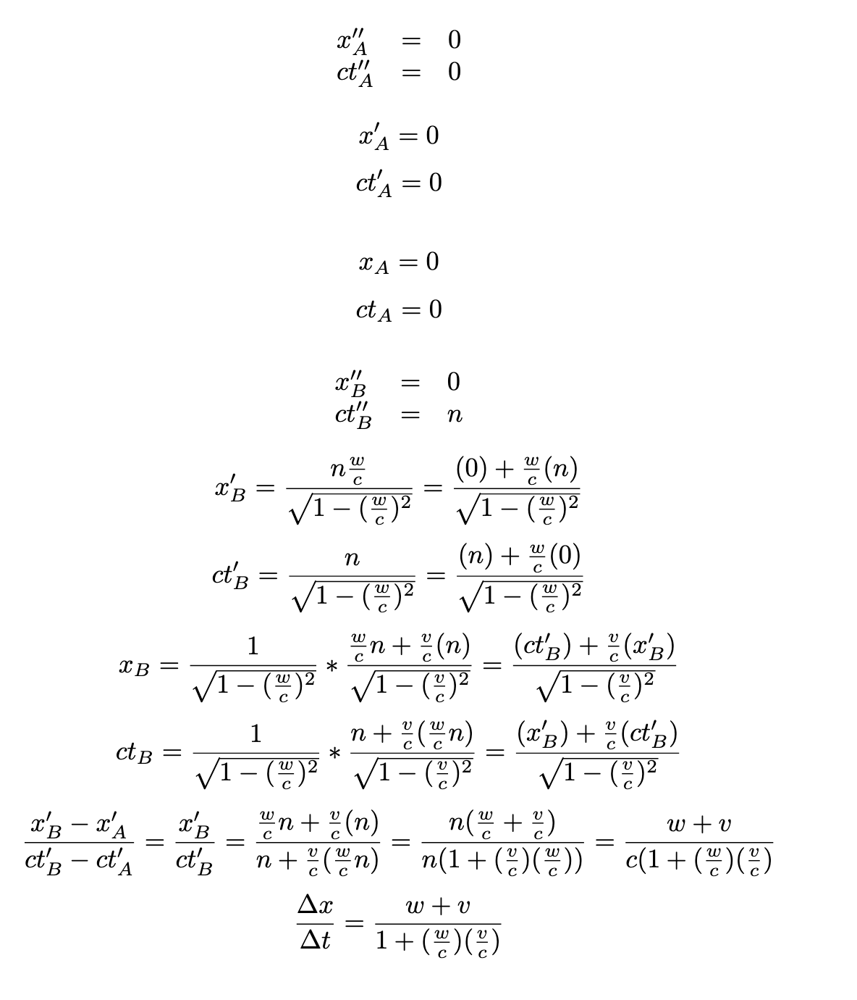

K' and K'' behave as expected. What about if we add K to the mix? (you might have to zoom out for best effect)
v/c = w/c =final velocity (Δx/Δct) =
Imagine that you are standing on the embankment, watching a train go by, and through the window, you see a ball rolling along the train’s floor. How fast is that ball moving? If the train is moving at velocity v with respect to embankment, and the ball is moving at velocity w with respect to the train, then classical mechanics tells us that the ball should be moving at velocity (v+w) with respect to the embankment.
As always, relativity complicates things. There are several ways to go about explaining why simple addition doesn't work, but I'm going to do it by using three spacetime diagrams. K will be the embankment, K' will be the train, and K'' will be the ball. As described above, v will be the velocity of K' with respect to K, and w will be the velocity of K'' with respect to K'.
Like we did earlier, let's construct some events for this scenario. First, let's set event A to be at x''=0, ct''=0. From the ball's perspective, it isn't moving, so event B should be at x''=0, ct''=n. For starters, let's look at K' and K'' side-by-side, and examine the resulting Δx'/Δct' (computed numerically): w/c = final velocity (Δx'/Δct') =
K' and K'' behave as expected. What about if we add K to the mix? (you might have to zoom out for best effect)
v/c = w/c =final velocity (Δx/Δct) =
If the velocity was truly additive, then they should add up! Instead, we get 0.5 + 0.5 = 0.8. In fact, pretty much the only time that the addition works as expected is when either v or w is extremely close to 0 (though it's also worthy of note that it works when v + w = 0).
Consider the following math describing this same process:
The end formula for the final observed velocity contains standard mechanics's formula, but multiplied by some additional factors. Notice that as w or v approach 0, the denominator becomes closer and closer to 1, and the formula becomes more similar to standard mechanics. Again, this makes sense because velocity addition works extremely well when not moving at relativistic speeds.